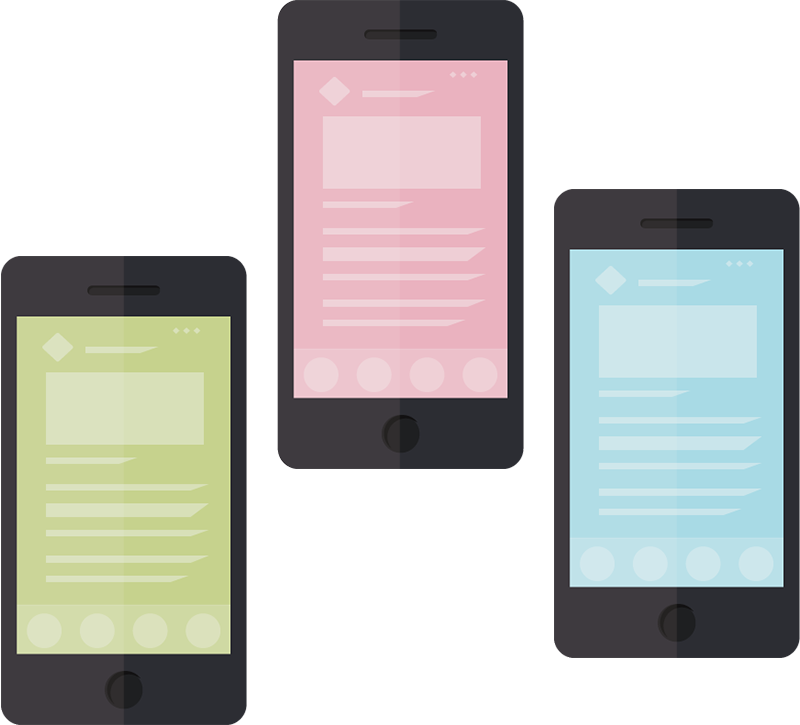
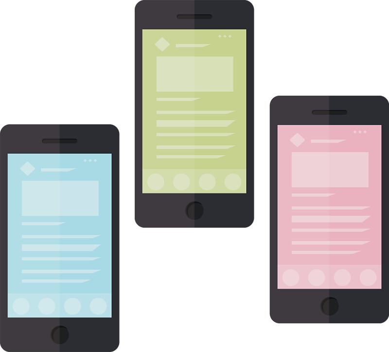
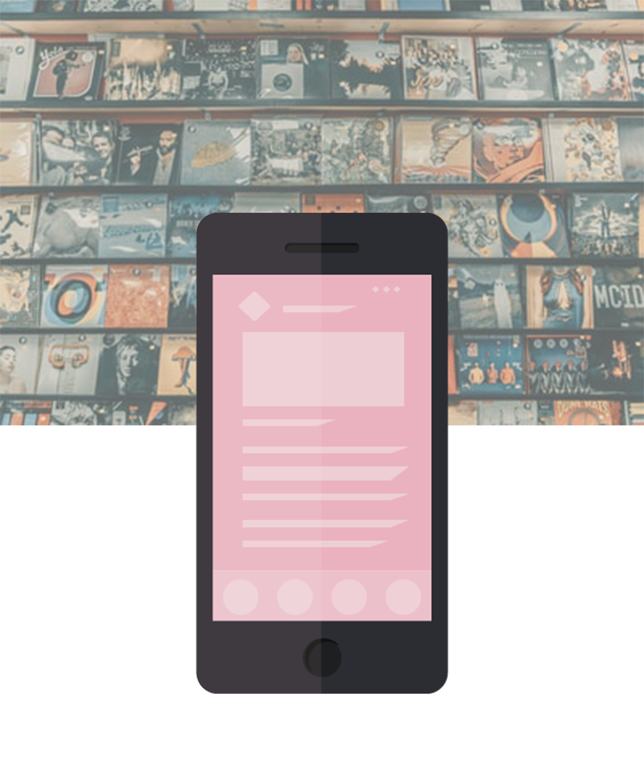
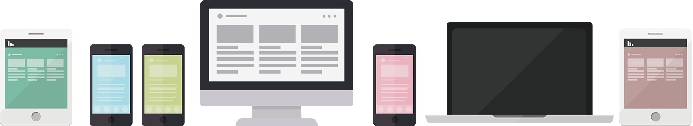

診断ツールで，あなたにぴったりのスマホを．
質問に答えるだけで，ほしかったスマホが見つかる
※本サイトは，デザインの1例(レスポンシブ対応有り)です．
リンク先等，省略した箇所もございます．
ShinoPhone 12 のご紹介
最新バージョンの ShinoPhone は、これまで以上にパーソナルかつ安全で、簡単に操作できるユーザー エクスペリエンスを、ご利用のデバイスで実現します。UI デザインが一新され、新しいプライバシー機能などが追加されています。
詳細を確認する

あなただけのOS
ShinoPhone 11 は、ユーザーの使い方に応じて最適化されています。会話の管理に役立つ、またあ なたの一日を整理するなど、あなたがより多くのことができるように設計されています
詳細を確認する


すべての人のためのデバイス
仕事、ゲーム、5G ストリーミングなどが選べます。 ShinoPhone 搭載の携帯電話、タブレットは 24,000以上。この中からあなたが探しているぴったりのものが見つかります
すべて表示最新情報を確認
最新のOSアップデート、重要な情報、ShinoPhoneに関する最新のニュースなどはこちらで確認できます
ShinoPhone OS の最新バージョン 、ShinoPhone 12 登場
この記事の全文を読むShinoPhone のアクセシビリティ機能をさらに使いやすく
この記事の全文を読む快適な睡眠をサポートするShinoPhoneのおやすみ時間機能
この記事の全文を読む- デベロッパー向け
- エンタープライズ向け
- エンタープライズの概要
- Essentials
- 管理
- セキュリティー
- 導入
- 従業員
- おすすめ
- エンタープライズ向けデバイス
- リソース
- パートナー向け
- プレス向け
- ShinoPhone をすべての人に
- Google Play の機能
- スマホに関わる情報メディア ShinoPhone Magazine
- エコシステム
- ShinoPhone Auto
- ShinoPhone TV
- サポート
- dtOS からの移行
- ShinoPhone File Transfer